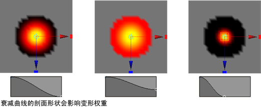
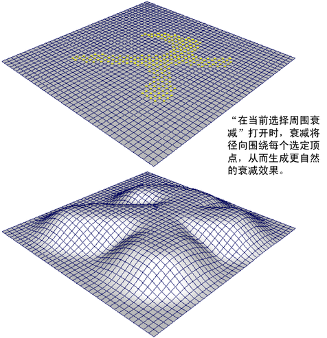
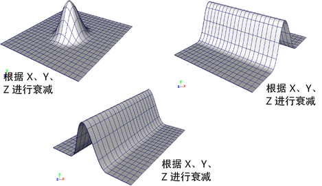
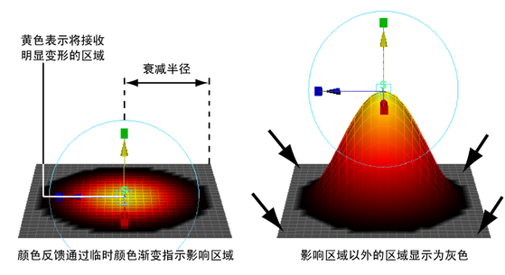

在“绑定”(Rigging)菜单集中，可以通过下面两种方式查看或设置这些选项：
- 选择“修改 > 变换工具 > 软修改工具”(Modify > Transformation Tools > Soft Modification Tool) >

- 选择“变形 > 软修改”(Deform > Soft Modification) >
- 衰减半径(Falloff Radius)
- 通过软修改工具确定变形区域。半径所确定的区域取决于“衰减模式”(Falloff Mode)及“在当前选择周围衰减”(Falloff Around Selection)选项是否启用。
- 衰减曲线(Falloff Curve)
- 控制“衰减半径”(Falloff Radius)所确定区域内的变形权重。在选择区域中心，“衰减曲线”(Falloff Curve)的默认形状所指定的影响物较大，在变形区域的外缘，其默认形状所指定的影响物较小。根据所需结果，可手动调整“衰减曲线”(Falloff Curve)的形状。

- 衰减模式(Falloff Mode)
- 确定选定区域的变形方式。
注： 尽管在 GPU 上支持“软修改”(Soft Modification)，但如果您正在处理几何体子集，则仅当“衰减模式”(Falloff Mode)设置为“体积”(Volume)时，“软修改”(Soft Modification)才支持 GPU 处理。
- 体积(Volume)
- 将“衰减模式”(Falloff Mode)设定为“体积”(Volume)后，软修改便基于影响物区域中心位置附近某一球体的 3D 体积。
- 曲面(Surface)
- 将“衰减模式”(Falloff Mode)设定为“曲面”(Surface)后，软修改便基于一个贴合曲面轮廓的区域。若想将软修改变形包裹在曲面上，则可使用曲面模式。例如，可以使用基于表面的衰减模式，使角色面部的上嘴唇与下嘴唇分离。
- 保留历史(Preserve History)
- 打开“保留历史”(Preserve History)后，可保存“软修改工具”(Soft Modification Tool)创建的所有节点。若要为软修改变形器的效果设定动画或随后对变形属性进行修改，则需要打开“保留历史”(Preserve History)，以确定保存变形历史。
关闭“保留历史”(Preserve History)后，“软修改工具”(Soft Modification Tool)将尝试移除其创建的变形历史和所有附加节点。若将软修改作为建模工具且无需采用建模历史，则应关闭“保留历史”(Preserve History)。
注： 只有在基本形状中不包含现有历史的情况下，“软修改工具”(Soft Modification Tool)才能删除变形历史，从而生成正确结果。如果即使已关闭“保留历史”(Preserve History)，但仍在创建变形器历史节点，则可尝试删除目标形状的历史，然后再次尝试变形。请参见示例 2：不会创建历史的软修改。 - 未选择遮罩(Mask Unselected)
- 关闭“未选择遮罩”(Mask Unselected)后，所有组件均变形。打开“未选择遮罩”(Mask Unselected)后，只变形选定组件。
- 在当前选择周围衰减(Falloff Around Selection)
- 从下列选项中进行选择：
- 启用(On)
- 在各选定顶点周围呈辐射状进行衰减。这样可以生成一个更自然的衰减效果，尤其当选定顶点构成一个任意形状时。

- 禁用(Off)
- 衰减的形状是一个围绕选择中心的球形。
- 衰减基于(Falloff Based On)
- 变形衰减曲线图的 X、Y 或 Z 轴方向。通过关闭沿一个或多个方向的衰减，可以创建各种效果（例如，渐变、边缘）。

- 颜色反馈(Color Feedback)
- 打开“颜色反馈”(Color Feedback)后，在软修改变形器的影响区域内，曲面网格暂时涂有一层渐变色。无论何时启用软修改操纵器，颜色渐变都会临时替代指定的着色材质。
“颜色反馈”(Color Feedback)直观地指出了影响物的区域，以及受影响区域内的影响和衰减量。受影响最大的区域（基于“衰减曲线”(Falloff Curve)的形状）显示为黄色。随着变形器的影响逐渐减弱，颜色渐变融合为较深的橙色/红色。影响区域中未变形的区域显示为黑色。“衰减半径”(Falloff Radius)外侧的区域显示为灰色。
“颜色反馈”(Color Feedback)可以通过线框或着色模式呈现在“多边形曲面”(polygonal surfaces)上。“颜色反馈”(Color Feedback)只能通过着色模式呈现在“NURBS 曲面”(NURBS surfaces)上，且不支持细分曲面。
使用“软修改工具”(Soft Modification Tool)设置编辑器中的设置来打开或关闭“颜色反馈”(Color Feedback)显示。
